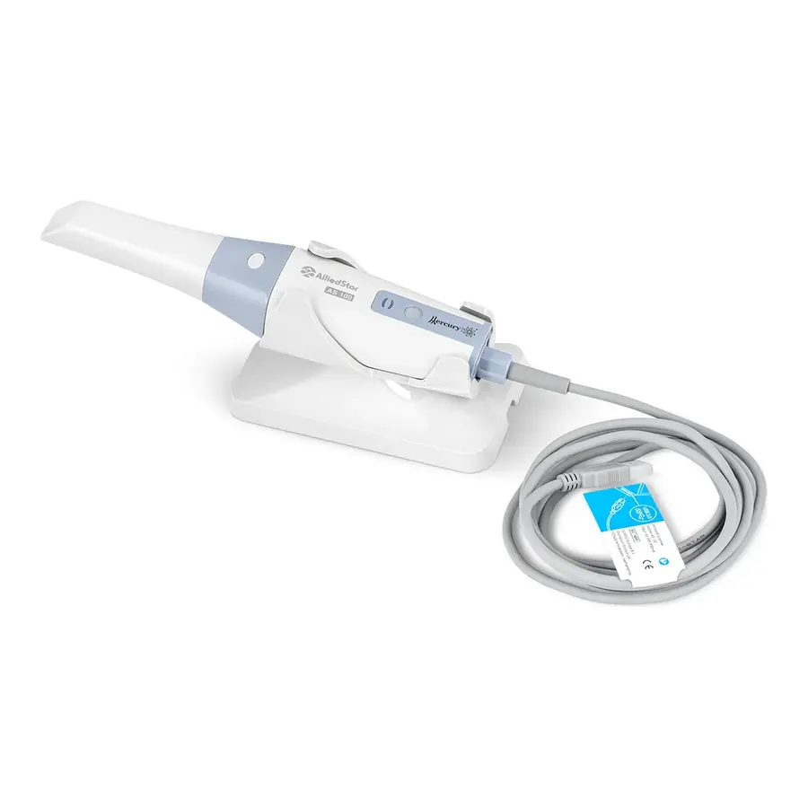

550 000 ₽в лизинг от 17 900 ₽/мес

Интраоральные сканеры
Инновационный интраоральный сканер AS 100 достиг наивысшего уровня точности в своем классе. Среднее отклонение при полнодуговом сканировании в живом организме около 20 мкм удовлетворяет потребностям различных клинических показаний, включая протезирование, ортодонтию и имплантацию. Будучи одним из самых точных сканеров на рынке, AS 100 предлагает сканирование без протокола и снижает влияние недостаточных навыков благодаря своей превосходной точности.
Технология высокоскоростной визуализации, принятая AS 100, обеспечивает ровное и быстрое сканирование, значительно повышая эффективность труда. Система умного сканирования позволяет начать съемку с любого места и быстро продолжить прерванное сканирование.
Избавившись от адаптера питания, который используют большинство интраоральных сканеров на рынке, AS 100 подключается напрямую к USB порту для одновременной передачи энергии и данных. Упрощенное соединение облегчает применение на нескольких установках сразу.
Интуитивный интерфейс и гибкий рабочий процесс позволяют легко привыкнуть к пользованию AS 100, что сокращает затраты на обучение до и после продажи. Благодаря минимальной зависимости от протокола сканирования даже новичок сможет выполнить сканирование за несколько минут. Имея алгоритмы обработки изображений с применением ИИ, AS 100 сканирует все стоматологические материалы благодаря тому, что автоматически применяет разные проекции, а именно внутриротовую, внешнюю, съемку металлических протезов и т.д., и эффективно убирает изображение мягких тканей. Автообновление ПО обеспечивает оптимизацию и улучшение производительности для каждого сканера одним кликом мыши.
Интраоральный сканер AS 100 компактный и легко держится в руке, при этом достигает области обзора в 16x14 мм в высоком разрешении.
AS 100 - один из самых легковесных сканеров на рынке. С массой (без кабеля) в 198г он не будет вызывать дискомфорт даже при длительном нахождении в руке.
При разработке продукта полностью проектируется и испытывается надежность сканера AS 100. AS 100 может работать непрерывно с лучшей производительностью, не требуя особого ухода. В то время как большинство конкурентов требуют калибровки раз в одну или две недели, AS 100 работает без калибровки.
Будучи точным оптическим прибором интраоральные сканеры обычно нестойкие к ударам. Случайное падение стало одной из главных причин расходов на обслуживание. Чтобы снизить эти расходы, AS 100 способен выдерживать определенные механические воздействия, что подтверждено в лабораторных испытаниях.
AS 100 — один из самых быстрых сканеров на рынке. Программное обеспечение плавное, ИИ приличный, и все это достигается с помощью простого подключения USB 3.0.
Наиболее вероятно, что недорогие интраоральные сканеры широко проникнут на рынок, особенно если они будут работать так. Используя Alliedstar AS 100, мы смогли легко выполнить сканирование всего зубного ряда всего за 35 секунд.
Alliedstar AS 100 IOS имеет встроенный в сканер вентилятор для предотвращения запотевания. Как и практически любой сканер на рынке, это значительно упрощает сканирование во рту без проблем с конденсацией на наконечнике сканера.
Что впечатляет в этом встроенном вентиляторе, так это то, что он не требует времени для прогрева. Мы могли запустить сканер в полностью холодном состоянии и сканировать пациента без запотевания. Опять же, еще одна замечательная функция.
Типичный рабочий процесс выглядит следующим образом:
Alliedstar IOS полностью открыт. Программное обеспечение позволяет легко экспортировать сканы в различные форматы. Это включает в себя популярный тип файлов STL, а также PLY.
Alliedstar AS 100 — один из новейших интраоральных сканеров, представленных на рынке. Это недорогой китайский сканер, который отличается впечатляющей скоростью сканирования, простым подключением через USB-кабель, полной поддержкой сенсорного экрана, а также очень легким весом.
Alliedstar — новая компания цифровой стоматологии, базирующаяся в Китае. Компания была основана в июне 2019 года. Интересно, что их основатель и генеральный директор уже почти десять лет работали директором по исследованиям и разработкам в Carestream Dental. Так что в этой компании есть большой опыт работы с IOS.
Помимо внутриротовых сканеров Alliedstar планирует разработать стоматологические рентгеновские аппараты, КЛКТ, камеры ввода-вывода и соответствующее программное обеспечение. По сути, Alliedstar станет производителем стоматологического оборудования и программного обеспечения для визуализации, а их первым продуктом станет интраоральный сканер AS 100.
Поскольку компания имеет большой опыт работы с цифровым оборудованием и программным обеспечением для управления изображениями, это заложило прочную основу для развития компании. Штаб-квартира компании находится в городе Чжанцзян, Шанхай, Китай, с производственными мощностями в провинции Сычуань. Они получили разрешение FDA на интраоральный сканер Alliedstar AS 100 в апреле 2021 года и разрешение CE в июне; и они только что получили одобрение NMPA/CFDA в декабре 2021 года.
AS 100 — один из самых быстрых сканеров на рынке. Программное обеспечение плавное, ИИ приличный, и все это достигается с помощью простого подключения USB 3.0.
Наиболее вероятно, что недорогие интраоральные сканеры широко проникнут на рынок, особенно если они будут работать так. Используя Alliedstar AS 100, мы смогли легко выполнить сканирование всего зубного ряда всего за 35 секунд.
Этот сканер с действительно впечатляющей скоростью сканирования, который может конкурировать в этом аспекте с некоторыми из основных игроков на рынке.
Данный сканер используется аналогично всем другим IOS на рынке. Программное обеспечение упрощено, но не страшно, так как выглядит современно. ИИ, встроенный в программное обеспечение, разумен и работает достаточно хорошо, особенно с учетом цены этого устройства. Он оснащен интеллектуальными алгоритмами, чтобы сделать процесс сканирования приятным.
Сканер быстро снова находит свое место, когда сканирование приостанавливается и перезапускается, сканы прикуса очень быстро сшиваются, а удаление артефактов выполняется хорошо. Хотя он не удаляет артефакты автоматически во время сканирования, как дорогие обычные сканеры, он хорошо справляется со своей задачей после повторного сканирования области, эффективно очищая любые нежелательные данные сканирования. Программное обеспечение устраняет некоторые артефакты, и окончательные отсканированные изображения выглядят более реалистично.
Между каждым этапом сканирования нет экранов загрузки, что ускоряет рабочий процесс. Вместо этого вся обработка происходит после завершения всех сканирований. В целом, это отличный опыт сканирования.
Сканер имеет эстетичный внешний вид и в целом довольно строгий дизайн. Alliedstar AS 100 удивительно эргономичен и удобно лежит в руке пользователя.
Сканер весит 198 грамм, что означает, что это один из самых легких сканеров на рынке. Он обладает хорошей эргономикой, а малый вес делает его приятным в использовании.
Точные размеры сканера составляют 219x46x36 мм, что делает его одним из самых маленьких сканеров на рынке и одним из самых легких. Сканер поставляется с двумя разными сканирующими наконечниками — большим и маленьким.
Размер этих наконечников составляет 22х18 мм для больших и 18,6х16,7 мм для маленьких. Это делает их одними из самых маленьких наконечников для сканирования на рынке.
В сканер встроена функция дистанционного управления, аналогичная Medit и TRIOS. Это позволяет вам перемещаться по всему программному обеспечению, вообще не касаясь компьютера.
Единственная другая кнопка на сканере находится сзади сканера. При подключении к сети эта кнопка мигает, указывая на то, что сканер получает питание. Эта кнопка используется для переключения между сканированием верхней/нижней челюсти и прикусом во время рабочего процесса сканирования.
Сканер поставляется с базой, которая также имеет очень упрощенный дизайн. При необходимости эту базу можно закрепить на стене. Это просто и соответствует цели. Основание занимает небольшую площадь, что ценно, особенно при размещении на небольшой тележке, и имеет металлическое основание, что делает его достаточно тяжелым и безопасным. Наконец, когда сканер помещается в базу, он переходит в спящий режим, а при извлечении автоматически включается.
Наиболее впечатляющей особенностью сканера AS 100 является тот факт, что он оснащен только одним кабелем USB 3.0. Компания каким-то образом устранила потребность в адаптере питания, который приходится использовать большинству интраоральных сканеров на рынке. Alliedstar AS 100 подключается напрямую к порту USB для подачи питания и передачи данных.
Alliedstar AS 100 IOS имеет встроенный в сканер вентилятор для предотвращения запотевания. Как и практически любой сканер на рынке, это значительно упрощает сканирование во рту без проблем с конденсацией на наконечнике сканера.
Что впечатляет в этом встроенном вентиляторе, так это то, что он не требует времени для прогрева. Мы могли запустить сканер в полностью холодном состоянии и сканировать пациента без запотевания. Опять же, еще одна замечательная функция.
Alliedstar IOS очень хорошо справляется со сканированием всей арки. Этот сканер может конкурировать с гораздо более дорогими сканерами на рынке.
Сканер обладает впечатляющей скоростью сканирования, впечатляющим искусственным интеллектом, быстро распознает места, где он был остановлен, а также встроенным вентилятором, который предотвращает запотевание и обеспечивает длительные периоды непрерывного сканирования. Он используется с тем же протоколом сканирования, что и все остальные сканеры. Используя AS 100, мы смогли выполнить полное сканирование зубного ряда в течение 35 секунд.
Программное обеспечение, на котором работает сканер Alliedstar, называется ScanPro. Он интуитивно понятен, выглядит современно и прост в использовании.
Как и почти все сканеры на рынке, программное обеспечение Alliedstar максимально упрощает рабочий процесс.
Рабочий процесс следует стандартной пошаговой последовательности, которая в настоящее время идентична для всех систем, представленных на рынке.
Типичный рабочий процесс выглядит следующим образом:
Пользоваться программой достаточно просто, а обработка сканов выполняется быстро.
Само программное обеспечение очень упрощено интересными способами. Например, несмотря на то, что вы можете выбрать зубы в лабораторном листе, здесь нет выбора материала или индикации. Вместо этого, по-видимому, ожидается, что вы напечатаете свои указания в поле для комментариев.
Еще одна интересная особенность этого программного обеспечения заключается в том, что оно поставляется с полностью функционирующей облачной функцией. Все дела автоматически отправляются в облако, а для открытия/экспорта любого дела с любого устройства можно использовать веб-страницу.
Это уникальная функция для дешевого сканера, поскольку большинство недорогих сканеров полагаются на локальное хранилище. Принято видеть, что облачное хранилище предлагается на очень недорогом рынке.
Alliedstar IOS полностью открыт. Программное обеспечение позволяет легко экспортировать сканы в различные форматы. Это включает в себя популярный тип файлов STL, а также PLY.
Alliedstar IOS не требует ежегодных сборов или подписки.
Отсутствие абонентской/ежегодной платы становится все более распространенным явлением на рынке IOS, и приятно видеть, что это имеет место и здесь. Низкая стоимость и отсутствие подписки — вот способ, которым эти китайские сканеры собираются проникнуть на рынок.
У Alliedstar также есть облачное хранилище со сканером. Новые зарегистрированные пользователи получат 15 ГБ бесплатного пространства.
Нажмите «Получить КП»: пришлём коммерческое предложение с ценой, сроком поставки и условиями. Или счёт, если цена на сайте вас устраивает.
По счёту для юрлица или в лизинг. Оплаты картой на сайте нет.
Привезём, смонтируем и запустим. Город и сроки уточняются.


Адрес на сайте: /catalog/introoralnye-skanery/alliedstar-as-100-pictures/